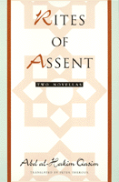

<body bgcolor="#FFFFFF" text="#000000" link="#0000FF" vlink="#CC0000" alink="#CC0000"><center><hr width="350" size="1" align="center" noshade>The first English-language translation of a controversial Egyptian writer<hr width="350" size="1" align="center" noshade><p><a href="https://cdcshoppingcart.uchicago.edu/Cart/ChicagoBook.aspx?ISBN=9781566393539&&PRESS=temple" target="_top">Buy this book!</a> | <a href="https://cdcshoppingcart.uchicago.edu/Cart/Cart.aspx?PRESS=temple" target="_top">View Cart</a> | <a href="https://cdcshoppingcart.uchicago.edu/Cart/Cart.aspx?PRESS=temple" target="_top">Check Out</a></p><p></p></center><!--none//--><h1>Rites of Assent</h1>
<H2>Two Novellas</H2>
<H2><!-- Translated by Peter Theroux. With an Introduction by Samia Mehrez --></H2>
<h3>Abd al-Hakim Qasim, translated by Peter Theroux, introduction by Samia Mehrez</h3>
<P>cloth 1-56639-353-1 $90.50, Jun 95, <FONT COLOR=#990033>Available</FONT>
<br>paper 1-56639-354-X $30.95, Jun 95, <FONT COLOR=#990033>Available</FONT>
<BR> 192 pp
5.5x8.25
</P><BLOCKQUOTE><I>"Written in 1977 and 1981, the novellas translated in this volume form a compelling unity and testify to the creativeness and vitality of contemporary Arab fiction."</I>
<br>&#150<b><I>Choice</I></b><I></I></BLOCKQUOTE>
<p>Abd al-Hakim Qasim (1935-1990), one of modern Egypt's great novelists, began writing short stories while imprisoned for his leftwing politics under the Nasser regime in the 1960s. This period in Qasim's life, along with his subsequent exile in Germany and his opposition to the Camp David Agreement, led him to avoid political commentary in his writing. He focused on people and events in the Egyptian village and the down-to-earth Sufi Islam practiced there. Still, the history of his political beliefs ensured his work would remain controversial, and most was published abroad in Beirut or Baghdad.
<p>The power and inventiveness of modern Egyptian writing are manifest in this first English-language translation of two novellas that Qasim published together during his lifetime. <I>Al-Mahdi</I> is the story of Awadallah, an impoverished Coptic umbrella maker forced to convert to Islam by members of the local Muslim brotherhood. Awadallah's conversion, both unwilling and insincere, torments him with guilt, and he soon falls gravely ill. At the same time, subplots explore the philandering mayor's attempt to seduce his maid, and an affectionate homoerotic relationship between two young men in the Brotherhood. Elegantly narrated and visually evocative, <I>Al-Mahdi</I> illuminates everyday religious tensions in a small Egyptian town.
<p>Where <I>Al-Mahdi</I> ends with Awadallah's death, <I>Good News from the Afterlife</I> opens virtually at the mouth of the grave&#151a testament to Qasim's versatility and compositional sense. This fantastical story brilliantly interweaves a young village boy's thoughts and the spiritual, sensual, and sometimes macabre recollections of a dead man newly lowered into his burial place. Memories and experiences mingle with images of the afterlife, as the deceased is judged by the Muslim angels of death and the boy suddenly hears that his grandfather has died. In the end, the boy awakes atop a grave, throwing into question which, if not all, of the story's strange events had been dreamed.
<BR>&nbsp;<h2>Excerpt</h2><P>Excerpt available at <a href="http://www.temple.edu/tempress">www.temple.edu/tempress</a></p>
<BR>&nbsp;<h2>Reviews</h2>
<p><I>"[T]here's more than Mahfouz in modern Egyptian fiction, and it's good to have Qasim's work among us."</I>
<br>&#150<b><I>Kirkus Reviews</I></b>
<BR>&nbsp;<h2>Contents</h2><P>
<p>Introduction &#150 Samia Mehrez
<br>1. Al-Mahdi
<br>2. Good News from the Afterlife
</P><BR>&nbsp;<H2>About the Author(s)</H2>
<table><tr><td valign="top"><img src="/tempress/authors/1208_au2.gif" height="90" width="75"></td><td width="100%" valign="middle"><p><b>Peter Theroux</b> is the translator of Abdelrahman Munif's <I>Cities of Salt</I> trilogy, author of several books, and winner of the Arabic Translation Award from Columbia University's Translation Center.</P></td></tr></table><table><tr><td valign="top"><img src="/tempress/authors/1208_au3.gif" height="90" width="75"></td><td width="100%" valign="middle"><p><b>Samia Mehrez</b>, Assistant Professor of Arabic Literature at the American University in Cairo, is the author of <I>Egyptian Writers: Between History and Fiction</I>.</P></td></tr></table>
<BR><H2>Subject Categories</H2>
<p><A HREF="/tempress/race.html" TARGET="_top">Race and Ethnicity</a>
<BR><A HREF="/tempress/literature.html" TARGET="_top">Literature and Drama</a>
</p>
<BR><h2 class="inpageheading">In the series</H2>
<P><I><a href="http://www.temple.edu/tempress/border.html" onMouseOver="window.status='Click for other books in this series!'; return true;" onMouseOut="window.status=''; return true;" target="_top">Border Lines: Works in Translation</a></i>, edited by Lawrence Venuti.
</p><p><I>Border Lines</I>, edited by Lawrence Venuti, is a translation series designed to make important foreign literary works available to an English-language audience and to recognize and support the role of translation in promoting cultural diversity. The books will be primarily fiction and poetry, but the series will also consider drama and non-fiction genres like memoirs and criticism. Preference will be given to foreign writers who have never been translated into English, and to foreign literatures that are underrepresented in Anglo-American culture because of aesthetic, cultural, or political differences.</p>
<p align="center"><a href="https://cdcshoppingcart.uchicago.edu/Cart/ChicagoBook.aspx?ISBN=9781566393539&&PRESS=temple" target="_top">Buy this book!</a> | <a href="https://cdcshoppingcart.uchicago.edu/Cart/Cart.aspx?PRESS=temple" target="_top">View Cart</a> | <a href="https://cdcshoppingcart.uchicago.edu/Cart/Cart.aspx?PRESS=temple" target="_top">Check Out</a></p><p><font face="Arial" size="1"><a href="copyright.html" onMouseOver="window.status='Web Copyright Policy';return true;" onMouseOut="window.status=''" title="Web Copyright Policy">&copy;</a> 2015 <a href="http://www.temple.edu" target="new" onMouseOver="window.status='Link to Temple University home page';return true;" onMouseOut="window.status=''" title="Link to Temple University home page">Temple University</a>. All Rights Reserved. http://www.temple.edu/tempress/titles/1208_reg.html</font></p>